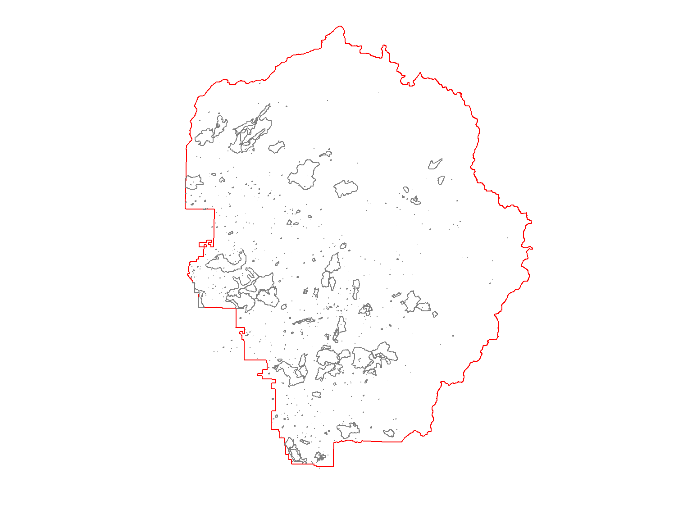

R for GIS
BayGeo, Spring 2024
Geoprocessing
Geoprocessing

Generally speaking, geoprocessing functions are functions that analyze or alter the geometry of the data.
We can generally divide geoprocessing into 3 categories:
Geoprocessing functions do their calculations with map units.
If area or distance measurements are involved, use projected data.
| Function | Computes |
|---|---|
| st_area() | area of polygons |
| st_length() | length / perimeter |
| st_distance() | distance between features |
Measurement functions from sf compute length and area in map units, but the units are saved as part of the result. This makes it easy to convert to using set_units() function from units package.
To get accurate results, we should project the boundary into UTM:
## Define a convenience variable for UTM Zone 11
epsg_utm11n_nad83 <- 26911
## Import the YNP border
yose_bnd_utm <- st_read(dsn="./data", layer="yose_boundary") |>
st_transform(epsg_utm11n_nad83)## Reading layer `yose_boundary' from data source `D:\Workshops\R-Spatial\rspatial_mod\outputs\rspatial_bgs24\exercises\data' using driver `ESRI Shapefile'
## Simple feature collection with 1 feature and 11 fields
## Geometry type: POLYGON
## Dimension: XY
## Bounding box: xmin: -119.8864 ymin: 37.4947 xmax: -119.1964 ymax: 38.18515
## Geodetic CRS: North_American_Datum_1983Next, find the area:
## 3019918537 [m^2]Large values of meters-squared can be hard to interpret. Let’s convert the area hectares and square miles using set_units() from the units package.
library(units)
## View in hectacres
set_units(yose_area, ha)
## View in square miles
set_units(yose_area, mi^2)## 301991.9 [ha]
## 1165.997 [mi^2]Import the burned area layer from historical fires, and compute the area of each fires (see code below to import them). Which was the biggest fire?
[Hint] [Solution]
You can use which.max() to find the largest element of a vector.
## Compute the area of each polygon
fire_areas <- st_area(yose_firepolys_utm)
## Find the index of the largest value
i <- which.max(fire_areas)
## Take a look at the row
yose_firepolys_utm[i,]
## Computet the size in miles squared
units::set_units(fire_areas[i], mi^2)## Simple feature collection with 1 feature and 21 fields
## Geometry type: MULTIPOLYGON
## Dimension: XY
## Bounding box: xmin: 246268.6 ymin: 4182145 xmax: 264049.5 ymax: 4215598
## Projected CRS: NAD83 / UTM zone 11N
## FIRE_ID LINK_ID SACS_ID FILE_ID NAME ACRES YEAR TYPE CAUSE HECTARES AREA PERIMETER SEQ_NO DECADE STARTDATE
## 4251 CA-YNP-0126 <NA> <NA> <NA> Rim 78892.24 2013 WF HC NA NA 1123267 NA 2010 2013-08-17
## OUTDATE X_COORD Y_COORD ET_ID Shape_Length Shape_Area Shape
## 4251 2013-10-18 NA NA NA 209505.2 318835601 MULTIPOLYGON (((247876.4 42...
## 123.1031 [mi^2]⇒ the 2013 Rim fire was the largest!
Computing lengths and perimeters is done similarly with
st_length().
First import the roads and inspect the attribute table.
## Import the roads
gdb_fn <- "./data/yose_roads.gdb"
yose_roads <- st_read(gdb_fn, "Yosemite_Roads")
glimpse(yose_roads)## Reading layer `Yosemite_Roads' from data source
## `D:\Workshops\R-Spatial\rspatial_mod\outputs\rspatial_bgs24\exercises\data\yose_roads.gdb' using driver `OpenFileGDB'
## Simple feature collection with 823 features and 40 fields
## Geometry type: MULTILINESTRING
## Dimension: XY
## Bounding box: xmin: 234658.1 ymin: 4139484 xmax: 324852.6 ymax: 4250252
## Projected CRS: NAD83 / UTM zone 11N
## Rows: 823
## Columns: 41
## $ RDNAME <chr> "Northside Drive", "Northside Drive", "Northside Drive", "Southside Drive", "Northside Drive", "N…
## $ RDALTNAME <chr> NA, NA, NA, NA, NA, NA, NA, NA, NA, NA, NA, NA, NA, NA, NA, NA, NA, NA, NA, NA, NA, NA, NA, NA, N…
## $ MAPLABEL <chr> NA, NA, NA, NA, NA, NA, NA, NA, NA, NA, NA, NA, NA, NA, NA, NA, NA, NA, NA, NA, NA, NA, NA, NA, N…
## $ RDSTATUS <chr> "Existing", "Existing", "Existing", "Existing", "Existing", "Existing", "Existing", "Existing", "…
## $ RDCLASS <chr> "Primary", "Primary", "Primary", "Primary", "Primary", "Primary", "Secondary", "Primary", "Second…
## $ RDSURFACE <chr> "Asphalt", "Asphalt", "Asphalt", "Asphalt", "Asphalt", "Asphalt", "Asphalt", "Asphalt", "Asphalt"…
## $ RDONEWAY <chr> NA, NA, NA, NA, NA, NA, NA, NA, NA, NA, NA, NA, NA, NA, NA, NA, NA, NA, NA, NA, NA, NA, NA, NA, N…
## $ RDLANES <int> NA, NA, NA, NA, NA, NA, NA, NA, NA, NA, NA, NA, NA, NA, NA, NA, NA, NA, NA, NA, NA, NA, NA, NA, N…
## $ RDHICLEAR <chr> "No", "No", "No", "No", "No", "No", "No", "No", "No", "No", "No", "No", "No", "No", "No", "No", "…
## $ RTENUMBER <chr> NA, NA, NA, NA, NA, NA, NA, NA, NA, NA, NA, NA, NA, NA, NA, NA, NA, NA, NA, NA, NA, NA, NA, NA, N…
## $ SEASONAL <chr> NA, NA, NA, NA, NA, NA, NA, NA, NA, NA, NA, NA, NA, NA, NA, NA, NA, NA, NA, NA, NA, NA, NA, NA, N…
## $ SEASDESC <chr> NA, NA, NA, NA, NA, NA, NA, NA, NA, NA, NA, NA, NA, NA, NA, NA, NA, NA, NA, NA, NA, NA, NA, NA, N…
## $ RDMAINTAINER <chr> NA, NA, NA, NA, NA, NA, NA, NA, NA, NA, NA, NA, NA, NA, NA, NA, NA, NA, NA, NA, NA, NA, NA, NA, N…
## $ ISEXTANT <chr> NA, NA, NA, NA, NA, NA, NA, NA, NA, NA, NA, NA, NA, NA, NA, NA, NA, NA, NA, NA, NA, NA, NA, NA, N…
## $ PUBLICDISPLAY <chr> "Public Map Display", "Public Map Display", "Public Map Display", "Public Map Display", "Public M…
## $ DATAACCESS <chr> "Unrestricted", "Unrestricted", "Unrestricted", "Unrestricted", "Unrestricted", "Unrestricted", "…
## $ UNITCODE <chr> "YOSE", "YOSE", "YOSE", "YOSE", "YOSE", "YOSE", "YOSE", "YOSE", "YOSE", "YOSE", "YOSE", "YOSE", "…
## $ UNITNAME <chr> "Yosemite National Park", "Yosemite National Park", "Yosemite National Park", "Yosemite National …
## $ GROUPCODE <chr> NA, NA, NA, NA, NA, NA, NA, NA, NA, NA, NA, NA, NA, NA, NA, NA, NA, NA, NA, NA, NA, NA, NA, NA, N…
## $ GROUPNAME <chr> NA, NA, NA, NA, NA, NA, NA, NA, NA, NA, NA, NA, NA, NA, NA, NA, NA, NA, NA, NA, NA, NA, NA, NA, N…
## $ REGIONCODE <chr> "PWR", "PWR", "PWR", "PWR", "PWR", "PWR", "PWR", "PWR", "PWR", "PWR", "PWR", "PWR", "PWR", "PWR",…
## $ CREATEDATE <dttm> NA, NA, NA, NA, NA, NA, NA, NA, NA, NA, NA, NA, NA, NA, NA, NA, NA, NA, NA, NA, NA, NA, NA, NA, …
## $ CREATEUSER <chr> NA, NA, NA, NA, NA, NA, NA, NA, NA, NA, NA, NA, NA, NA, NA, NA, NA, NA, NA, NA, NA, NA, NA, NA, N…
## $ EDITDATE <dttm> NA, NA, NA, NA, NA, NA, NA, NA, NA, NA, NA, NA, NA, NA, NA, NA, NA, NA, NA, NA, NA, NA, NA, NA, …
## $ EDITUSER <chr> NA, NA, NA, NA, NA, NA, NA, NA, NA, NA, NA, NA, NA, NA, NA, NA, NA, NA, NA, NA, NA, NA, NA, NA, N…
## $ MAPMETHOD <chr> NA, NA, NA, NA, NA, NA, NA, NA, NA, NA, NA, NA, NA, NA, NA, NA, NA, NA, NA, NA, NA, NA, NA, NA, N…
## $ MAPSOURCE <chr> NA, NA, NA, NA, NA, NA, NA, NA, NA, NA, NA, NA, NA, NA, NA, NA, NA, NA, NA, NA, NA, NA, NA, NA, N…
## $ SOURCEDATE <dttm> NA, NA, NA, NA, NA, NA, NA, NA, NA, NA, NA, NA, NA, NA, NA, NA, NA, NA, NA, NA, NA, NA, NA, NA, …
## $ XYACCURACY <chr> NA, NA, NA, NA, NA, NA, NA, NA, NA, NA, NA, NA, NA, NA, NA, NA, NA, NA, NA, NA, NA, NA, NA, NA, N…
## $ ROUTEID <chr> NA, NA, NA, NA, NA, NA, NA, NA, NA, NA, NA, NA, NA, NA, NA, NA, NA, NA, NA, NA, NA, NA, NA, NA, N…
## $ FACLOCID <chr> NA, NA, NA, NA, NA, NA, NA, NA, NA, NA, NA, NA, NA, NA, NA, NA, NA, NA, NA, NA, NA, NA, NA, NA, N…
## $ FACASSETID <chr> NA, NA, NA, NA, NA, NA, NA, NA, NA, NA, NA, NA, NA, NA, NA, NA, NA, NA, NA, NA, NA, NA, NA, NA, N…
## $ FEATUREID <chr> NA, NA, NA, NA, NA, NA, NA, NA, NA, NA, NA, NA, NA, NA, NA, NA, NA, NA, NA, NA, NA, NA, NA, NA, N…
## $ GEOMETRYID <chr> NA, NA, NA, NA, NA, NA, NA, NA, NA, NA, NA, NA, NA, NA, NA, NA, NA, NA, NA, NA, NA, NA, NA, NA, N…
## $ NOTES <chr> "In Park = Y, Fire Road = No", "In Park = Y, Fire Road = No", "In Park = Y, Fire Road = No", "In …
## $ YOSE_Surface <chr> "Paved", "Paved", "Paved", "Paved", "Paved", "Paved", "Paved", "Paved", "Paved", "Paved", "Paved"…
## $ YOSE_FIRE_ROAD <chr> "No", "No", "No", "No", "No", "No", "No", "No", "No", "No", "No", "No", "No", "No", "No", "No", "…
## $ YOSE_INPARK <chr> "Yes", "Yes", "Yes", "Yes", "Yes", "Yes", "Yes", "Yes", "Yes", "Yes", "Yes", "Yes", "Yes", "Yes",…
## $ YOSE_Type <chr> "Primary Road", "Primary Road", "Primary Road", "Primary Road", "Primary Road", "Primary Road", "…
## $ Shape_Length <dbl> 493.53512, 67.90781, 33.35863, 258.00073, 117.94169, 167.51558, 71.82903, 330.03084, 73.37367, 80…
## $ Shape <MULTILINESTRING [m]> MULTILINESTRING ((270865.2 ..., MULTILINESTRING ((270821.5 ..., MULTILINESTRING (…Next, write an expression that returns the total length of all primary roads.
## Load the units package so we can convert meters to miles
library(units)
## Use a mix of functions from dplyr, sf, base R, and units
yose_roads |>
dplyr::filter(RDCLASS == "Primary") |> ## grab just the primary roads
sf::st_length() |> ## compute length of each segment (as numeric vector)
sum() |> ## take the sum
units::set_units("miles") ## convert to miles## 375.5348 [miles]How many miles of Secondary roads are there?
[Solution]
To add geometric measurements to the attribute table, use
dplyr::mutate():
Calculating distances between features and finding nearest neighbors will be covered in the Spatial Queries session.
sf has a number of functions that will create new geometries based on existing ones:
| Function | Computes |
|---|---|
| st_buffer() | compute a buffer around this geometry/each geometry |
| st_centroid() | gives centroid of geometry |
| st_convex_hull() | creates convex hull of set of points |
| st_line_merge() | merges lines |
| st_segmentize() | adds points to straight lines |
| st_voronoi() | creates voronoi tesselation |
| st_triangulate() | triangulates set of points (not constrained) |
| st_polygonize() | creates polygon from lines that form a closed ring |
| st_simplify() | simplifies lines by removing vertices |
| st_split() | split a polygon given line geometry |
| st_boundary() | return the boundary of a geometry |
First, import the watersheds:
Next, compute the centroids:
Let’s put a 1km buffer around each of the campgrounds.
First import the campgrounds (which are part of the yose_poi Shapefile):
## Import and project the campgrounds
yose_campgrnds_utm <- st_read(dsn="./data", layer="yose_poi") |>
dplyr::filter(POITYPE == 'Campground') |>
dplyr::select(POINAME) |>
st_transform(epsg_utm11n_nad83)Next, buffer them (remember the buffer distance should be in map units):
## Create the 1km buffer
yose_campgrnds_buff <- st_buffer(yose_campgrnds_utm, dist=1000)
## Plot
tm_shape(yose_bnd_utm) +
tm_borders() +
tm_shape(yose_campgrnds_buff) +
tm_polygons(col="red") +
tm_layout(title="1km buffer around campgrounds",
title.bg.color="white") +
tm_scale_bar(position = c("right", "bottom"))Other functions take two input layers and combine them in different ways.
| Function | Computes |
|---|---|
| st_union() | union of several geometries |
| st_intersection() | intersection of pairs of geometries |
| st_difference() | difference between pairs of geometries |
| st_sym_difference() | symmetric difference (xor, union w/o intersection) |
Union all the burn scars for 1980s. What was the total area burned?
First we pull out all the fires for the 1980s:
## Extract fire scars from the 1980s
yose_fires_80s <- yose_firepolys_utm |> filter(YEAR >= 1980 & YEAR <=1989)
nrow(yose_fires_80s)
## Plot them
plot(yose_bnd_utm |> st_geometry(), col=NA, border="red")
plot(yose_fires_80s |> st_geometry(), col=NA, border="gray50", add=TRUE)## [1] 767
Next we union the polygons and compute the area.
## Union the polygons (to remove overlapping polygons)
yose_fires_80s_union <- yose_fires_80s |> st_union()
plot(yose_bnd_utm |> st_geometry(), col=NA, border="red")
plot(yose_fires_80s_union |> st_geometry(), col="gray80", border="gray60", add=TRUE)
## Compute the total area, displying the units in square miles
yose_fires_80s_union |> st_area() |> set_units(mi2)## 87.66586 [mi2]Find the total area burned during the 1990s.
[Solution]
Sometimes you may get a typology error caused by a self-intersecting
polygon or something similar. You can repair some types of typology
errors with st_make_valid() from the
sf package.
Run the following code and you will probably get an error message because one of the fire polygons for the 2000s has a self-intersection. Un-comment the the st_make_valid() line and try again.
Today we saw how to:
Additional Resources
sf Vignette 3 - Manipulating Simple Feature Geometries. sf package Vignette